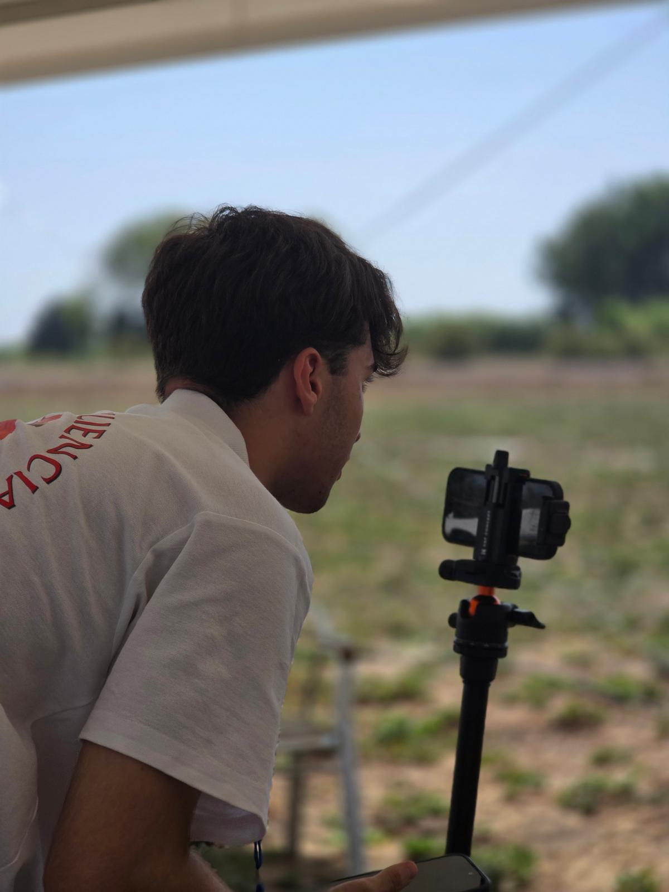
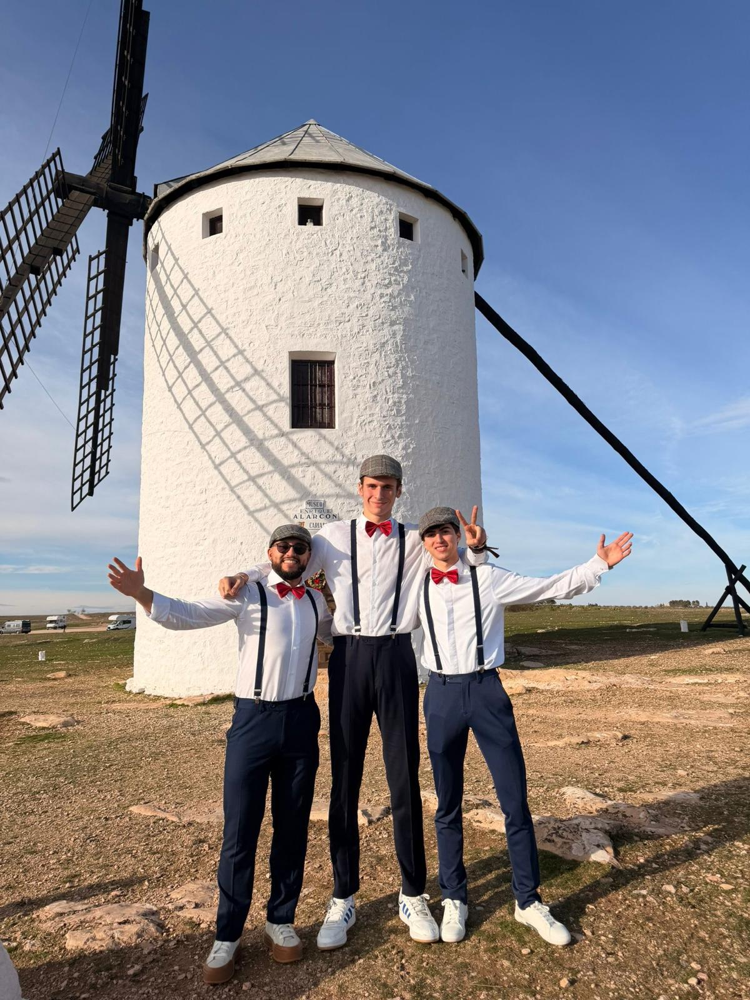
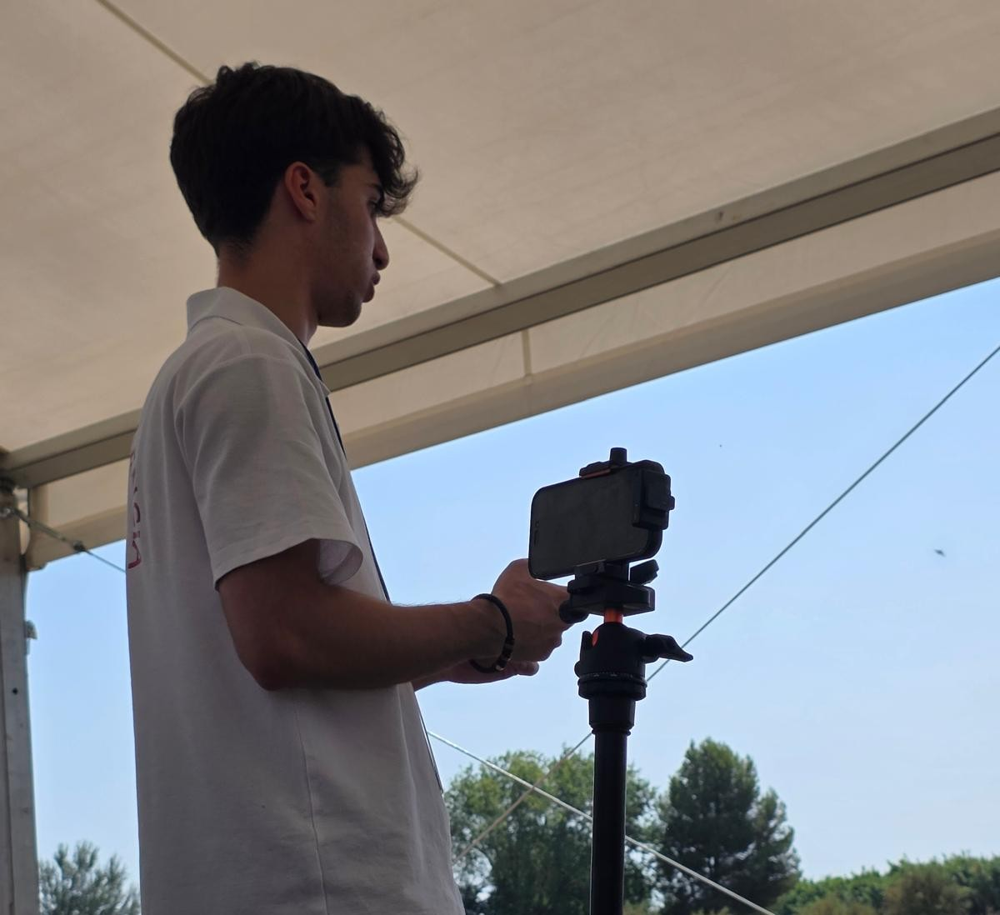
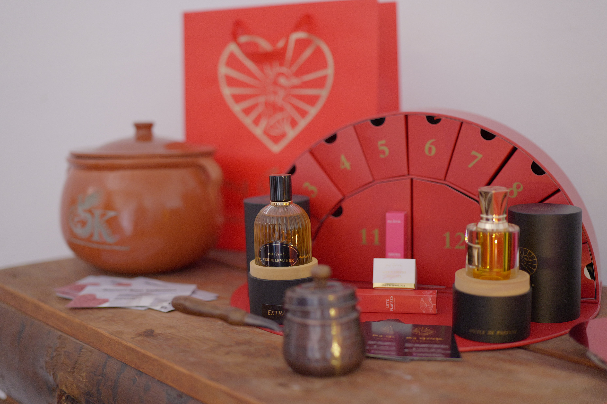
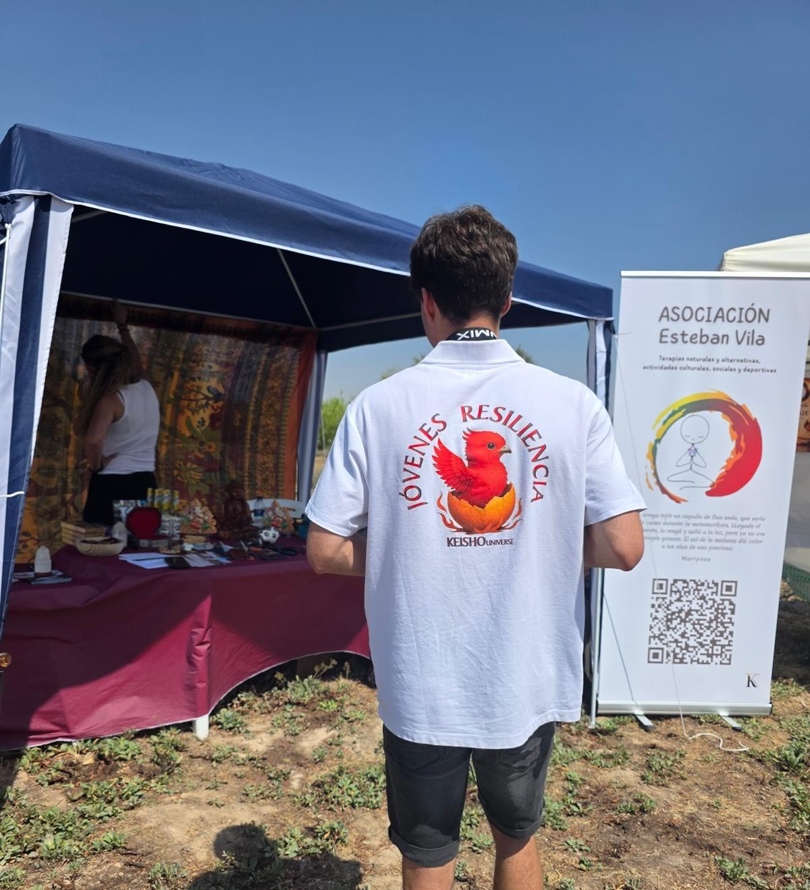
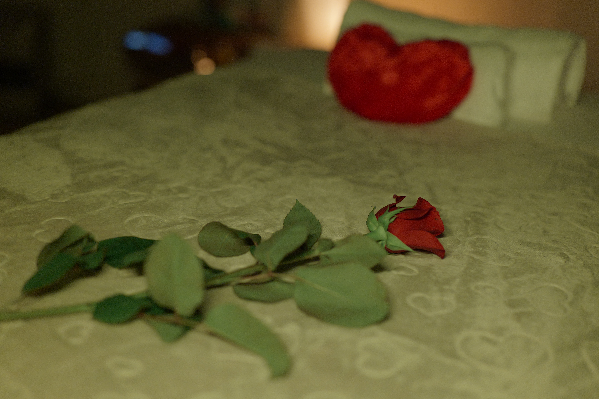
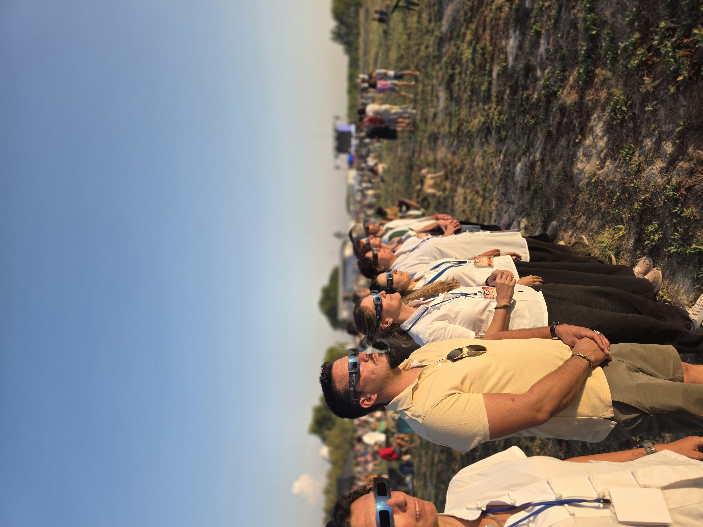
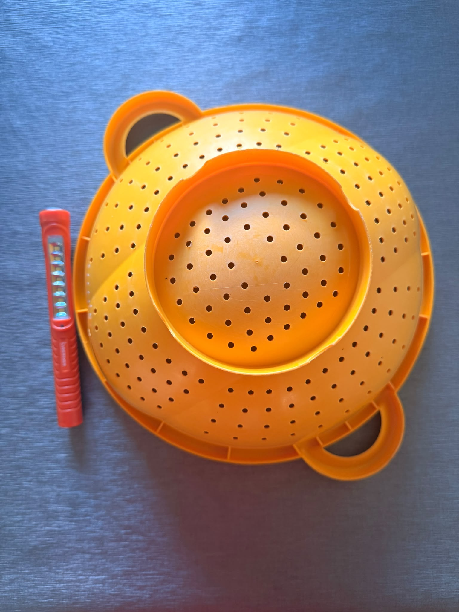
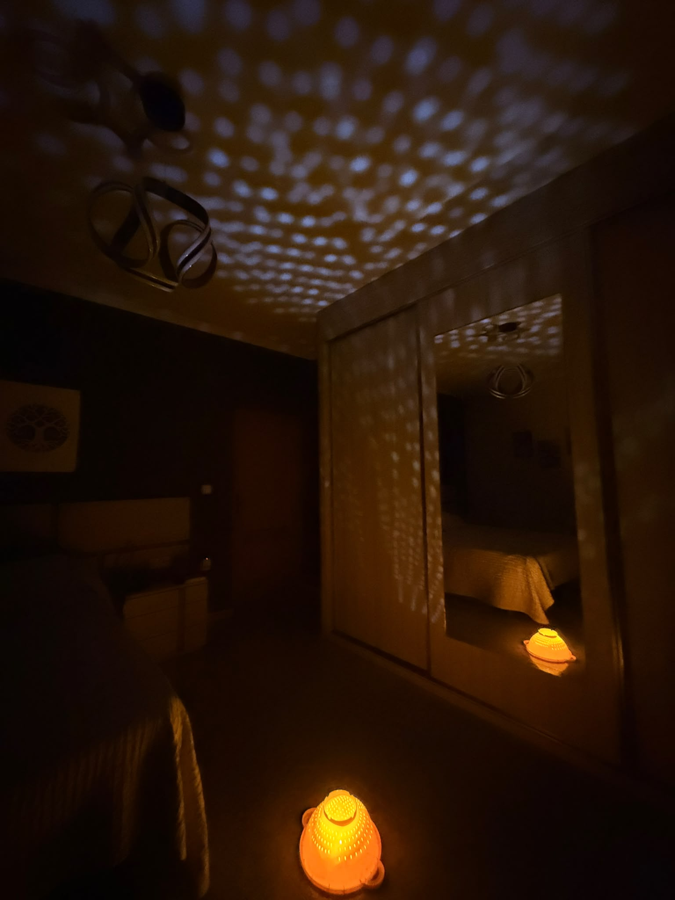

01
Fotografía
He realizado formación en fotografía y he aprendido conceptos sobre cómo realizar las grabaciones y qué tipo de contenido buscaba la empresa con la que he trabajado.
Estudio informática. Estoy aprendiendo a contar cosas con una cámara.
Estoy estudiando segundo de Sistemas Microinformáticos y Redes (SMR) y este año tengo que realizar tres meses de prácticas. Quiero aprovecharlos para seguir aprendiendo y creando en el mundo audiovisual.

Foto 014:5 · verticalSoy Gonzalo, tengo 17 años y estoy cursando 2.º de SMR.
Aunque mi formación está relacionada con la informática, durante este último tiempo he descubierto otro mundo que también me llama mucho la atención: la fotografía, el vídeo y la creación de contenido.
Todavía estoy dando mis primeros pasos, pero precisamente por eso tengo muchas ganas de seguir aprendiendo.
Formación inicial. Base para seguir aprendiendo, no un punto de llegada.
He realizado formación en fotografía y he aprendido conceptos sobre cómo realizar las grabaciones y qué tipo de contenido buscaba la empresa con la que he trabajado.
He realizado un curso de edición para aprender los fundamentos del proceso y entender mejor cómo se trabaja el contenido una vez grabado.
Nivel: fundamentos
He aprendido a desenvolverme con una cámara y a grabar pensando en el resultado que posteriormente tendrá el contenido.
Mi experiencia audiovisual todavía está empezando, pero ya he tenido la oportunidad de participar en pequeños eventos, grabaciones de unas horas, eventos de un día y alguna acción promocional.
También he grabado contenido para Keisho, y parte del material que he realizado ha terminado utilizándose en sus redes sociales.

Foto 02Horizontal
Foto 03Backstage
Foto 04Acción
Foto 05
Foto 06En Keisho he podido acercarme por primera vez a un entorno real de creación de contenido.
He participado en grabaciones, he aprendido qué tipo de planos y contenido necesitaban y he tenido la oportunidad de ver cómo ese material termina formando parte de la comunicación de una empresa.
Keisho es una empresa de experiencia y transformación personal. Yo he participado en la parte de contenido y grabación.

Una de las cosas que más me gusta es aprender algo y probarlo.
Creo que la mejor forma de mejorar es combinar formación con práctica: aprender un concepto, ponerlo en práctica, equivocarme, corregirlo y volver a intentarlo.
Durante este año me he dado cuenta de que, para crear algo que llame la atención, no siempre hacen falta grandes recursos. Muchas veces basta con una buena idea, una mirada diferente y saber aprovechar lo que tienes delante.
Esa forma de entender la creatividad es una de las cosas que más me atrae de Koalitic. Quiero aprender a mirar una escena cotidiana y encontrar posibilidades donde ahora mismo no las vería, y después explorar cómo darles forma combinando la creatividad con lo que estoy aprendiendo en informática: tecnología, herramientas digitales y, como una opción más, la inteligencia artificial.
También me interesa ver cómo nuevas herramientas, incluida la IA, pueden convivir con la creatividad y ampliar lo que se puede crear.

Foto 08Antes
Foto 09DespuésPrecisamente por eso me interesa Koalitic.
Me atrae la forma en la que combináis creatividad, fotografía, vídeo, contenido para redes y nuevas herramientas como la inteligencia artificial.
Estoy empezando a construir mi propio camino dentro de este mundo, entre la informática y lo audiovisual, y creo que estar cerca de vosotros podría ayudarme a seguir descubriendo cómo unir ambos lados.
Cosas que me gustaría mejorar. Objetivos míos, que espero ir trabajando durante las prácticas.
Seguir aprendiendo a utilizar la cámara, pensar mejor las composiciones y conseguir imágenes más intencionadas.
Entender mejor cómo plantear una grabación, qué planos utilizar y cómo construir una pieza audiovisual.
Aprender cómo se piensa una pieza desde la idea hasta su publicación y cómo adaptar el contenido a diferentes plataformas.
Descubrir nuevas formas de utilizar herramientas de inteligencia artificial dentro de procesos creativos.
Mi objetivo no es llegar pensando que ya lo sé todo.
Estoy empezando.
Quiero aprovechar estos tres meses para aprender de personas con experiencia, poner en práctica lo que ya sé, descubrir cosas nuevas y terminar las prácticas siendo capaz de hacer mucho más que cuando empecé.
Si habéis llegado hasta aquí, gracias por conocerme un poco mejor.
Me encantaría tener la oportunidad de seguir aprendiendo, crear contenido y descubrir hasta dónde puedo llegar en un entorno como Koalitic.